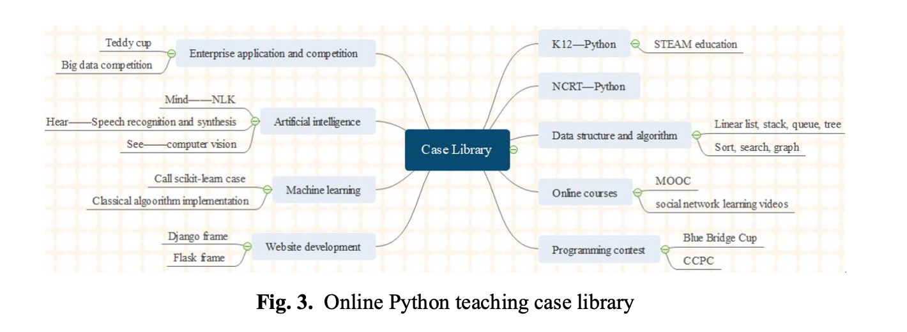
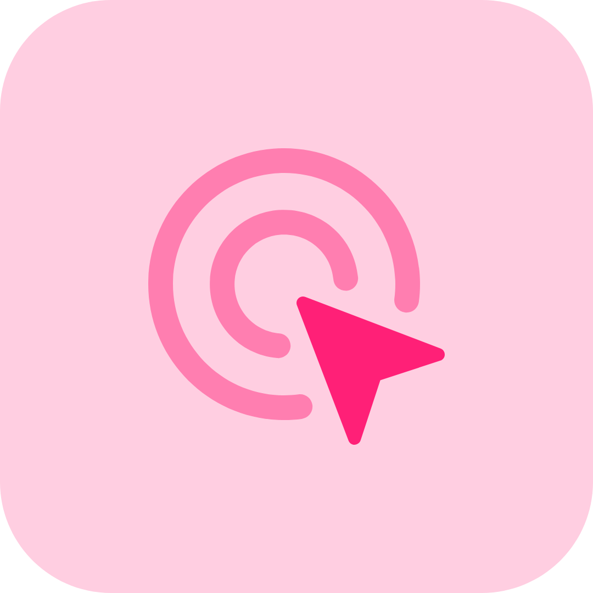

Introduction
Although innovative technologies have continually emerged throughout the 21st century, LIS scholars of late have focused on information and communication technologies emerging from the closure of schools, libraries, and other public spaces during the spread of COVID-19. These include synchronous and asynchronous programs that library patrons can attend, use, or interact with from the privacy of their own home. In this program and at my workplace, I've had the opportunity to learn what new technologies are used in the library today, how to use new technologies, and how creativity can help make new technologies more approachable. I've created a split-screen tutorial with quiz questions and multimedia elements, an interactive webpage, a Python game, and a booktrailer viewable on Youtube. In the future, I need to develop ways of evaluating the technologies I use in the library.
Information and communication technologies are critical to modern library operations. Dickson (2021) states that "social distancing protocols have forced many industries to pivot from traditional, face-to-face transactions into this new and exciting virtual world" (p. 22). However, the ongoing pandemic is not the only motivator for embracing new, innovative technologies in libraries. Dickson (2021) states that "social distancing protocols have forced many industries to pivot from traditional, face-to-face transactions into this new and exciting virtual world" (p. 22). Librarian Anjum Najmi at Texas A&M University states that augmented reality is increasingly used at their library because physical library services "while successful for the most part are time intensive, cumbersome, and not always cost effective" (2018, p. 1304). Additionally, Najmi states that students are likely to forget information explained once in person amid other undergraduate introductions, anxious about going to the library, and hesitant to approach LIS professionals (p. 1304).
Staying aware of new, upcoming technologies to use in the library is of utmost importance for LIS professionals. By staying ahead of the curve on new skills and technologies, LIS professionals are able to help new generations learn digital, science and information literacy skills. Holden et al. (2010) surveyed undergraduate students across disciplines for their views on science literacy. Overall, the results of his study show that students across disciplines consider science literacy an important, life-long skill (Figure 3. p. 274). Additionally, the majority of these students consider themselves somewhat literate or literate (Figure 4, left. p. 275). Undergraduate students are a significant library patron group and their needs should be heard. Using upcoming technology within the library will support their attempts to continue gaining science literacy.

Left: Witherspoon et al. 2022, Appendix A. Faculty survey. It isn't up to LIS professionals alone to identify new technologies. As libraries are part of their surrounding communities, LIS professionals can rely on other professionals to gain knowledge about new technologies. Witherspoon et al. (2022) survey science faculty to learn what information literacy skills their students need, and when. This tactic allows library professionals to teach the most relevant content possible to students. Similarly, a survey could be conducted with other technology professionals, or patrons themselves, to determine which information and communication technologies are most recently developed, most important to patrons, and offer the most promise for the future. An additional bonus is that this survey could save LIS professionals valuable time and skills. Rather than spending time investigating and learning new information technologies without knowing their value among patrons, these professionals risk losing relevance and credibility among their patrons, and may not be able to attend to all their library duties.

Left: Figure 3: Python teaching "ecosystem." It is important to understand how new, emerging technologies should be designed, implemented and evaluated. Wang et al. (2020) reported their design and implementation of a case-based Python teaching course offering insight into the process of information and technology implementation. Python is a new information and communication technology; Python is a coding language used to make different applications for analyzing data, solving puzzles, webscraping, and more. Wang et al. (2020) state that they "cover the full computing ecosystem of Python programming, mainly including K12 programming, computer rank test NCRT (Python language), data structure and algorithm, other online courses, programming contest, website development, machine learning, artificial intelligence, and enterprise applications and competition" (p. 222). This case-based "Python ecosystem" (figure 3) is an interesting design for two reasons. First, "case-based" indicates individualized teaching based on students' prior coding knowledge, which can vary significantly. Second, their "Python ecosystem" (figure 3) includes several different methods of teaching Python, and if each teaching method is evaluated, it would be clear which methods are most effective for students. A standard questionnaire would suffice for program evaluation, as Rivera used to evaluate a mobile application he released in his library (2021).
Evidence
1) Libwizard tutorial (left) & accompanying paper (right)

My first piece of evidence is a tutorial split-screen quiz called "Zotero Tutorial," which I worked on in a two-person group project using LibWizard. I created the quiz questions (using Zotero), survey, and images in this split-screen quiz. My group partner recorded tutorial videos and edited the questions.
The tutorial quiz subject: Zotero is a free application and web extension duo that students can use to save article PDFs, organize them into categories, write notes about the articles, and export the article citations (in multiple citation style options) to a document. There are additional features for those inclined to learn more, and these are all outlined in Zotero tutorial above.
LibWizard is a technological tool that requires a paid library institution subscription to use. LibWizard makes it easy to create multimedia quizzes for library patrons to answer. These quizzes are "multimedia" because the quiz section occupies half the computer screen, while the other half is occupied by content, either text to read, or images or videos to watch. The goal of these quizzes is to help the viewer ask important questions as they interact with content.
I included this piece of evidence in this competency because Libwizard is a new kind of communicative technology that any librarian can learn to use. This technological tool can be used to make interactive, engaging quizzes intended to support learning. Libwizard is easy to use, implement and evaluate.
2) Website: Reference Desk O'matic
Reference Webpage
My second piece of evidence is a website called "Reference Desk O'matic," which I made using the techniques in INFO 246 using Bootstrap, a simplified way of making websites.
Bootstrap is a new tool used to make more interactive websites more quickly. Bootstrap is a website that provides website templates that you can fill with your own content. I downloaded a Bootstrap template (which had HTML, CSS and Javascript already saved in files) to create a particularly difficult, but highly interactive and informative tool: a "hover" element over database logos that briefly explains what each database is for. I made this element in response to what students in my academic library kept telling me, that they didn't know which database to use when. I edited this Bootstrap template using a free code editing application on my laptop called "Visual Studio Code." Bootstrap is a new information and communcation technology that LIS professionals can use to help patrons make better use of existing library services.
I included this piece of evidence to demonstrate how Bootstrap is a new, useful communication technology that can create interactive and informative websites for learning better research skills.
3) Python: "The Wizard Game"
 Python assignmentMy fourth piece of evidence is a program called "The Wizard Game" I wrote in INFO 246 using Python. I consider Python to be an emerging technology for the LIS profession, despite not being new, because it is becomign a more multidisciplinary tool. Python is a coding language that can be used to collect data, scrape webpages for data, and to create interactive Q & A programs.
Python can be used to create interactive programs with new ways to search for, learn and engage with information. In "The Wizard Game," I set the program to respond to users' questions with related answers. This is a very basic application of a more promising concept: targeted answers or responses to patrons' questions, all on a publicly accessible webpage. Additionally, by learning how to use Python, I can better assist patrons who also want to learn how to use Python.
I chose to include this assignment in this competency because it shows my ability to identify upcoming technologies, and to use them for library programming and services.
4) Video: Booktrailer for VALIS by Philip K. Dick
My fourth piece of evidence is a book trailer that I created in INFO 281-12: Booktalking and booktrailering. I created this book trailer called " V.A.L.I.S. by Philip K. Dick" to introduce new readers to this book. Book trailers have been used to advertise new books through video for the past decade, but are continually improving with the use of new, emerging photo- and video-editing technologies.
Creating instruction through visual scenery was difficult and required me to learn to use new technological tools. I created this book trailer using copyright-safe images, as well as images I drew and edited myself using Canva, a photo-editing website I pay a subscription for, and Gimp, a free photo-editing computer application. I used iMovie, a free video-editing computer application, to piece together the images I created into one cohesive video, and paired this all to copyright-safe music. Working with multiple types of media and tools taught me to appreciate how information can be communicated without words. I definitely want more experience making book trailers. This one was only my second attempt. I've learned a great deal about them and have found that when done well, they're highly effective at encouraging people to read a particular book. This "trailer" type promotion method could also be used for other kinds of learning experiences.
I included this book trailer as a piece of evidence because book trailers require new communcative technology that inspires viewers to interact with information in new, innovative ways.
Conclusion
LIS professionals have many options for identifying, using, designing and evaluating new information and communication technologies, because LIS professionals can rely on their active, surrounding communities. First, LIS professionals can reference other scholars' usage of information technology used to communicate with various patron groups. Second, LIS professionals can survey members of their community who work professionally with new, upcoming technologies in order to identify those which are new and upcoming. Third, LIS professionals should design technological services with multiple aspects in order to determine which aspects are most widely and positively received by patrons. And finally, through questionnaires and incentives, LIS professionals are able to seek feedback from patrons regarding the quality of their technological applications.
I have devoted much of my time in this program to learning new, upcoming technologies, including coding languages, like: HTML, CSS, PHP, Javascript, Python, and SQL. I have also learned photo and video editing software like Gimp, Canva, iMovie and OBS. In the future, I plan to use the many free teaching services online to continue learning coding languages, and plan to put my photo and video editing software to use in the library. One area in which I particularly need improvement is in evaluating my usage of new information and communication technologies. By becoming a more technologically informed LIS professional, I plan to help move the library field toward a more technologically advanced future.
References
Abubakar, M.K. (2021). Implementation and use of virtual reference services in academic libraries during and post COVID-19 pandemic: A necessity for development countries. Library Philosophy & Practice, 1-18. Link.
Dickson, C.M. (2021). RFID technology and beyond: How your library is getting smarter. Computers in Libraries 41(4), 19-22. Link.
Holden, I.I. (2010). Science literacy and lifelong learning in the classroom: A measure of attitudes among university students. Journal of Library Administration 50(3), 265-282.
Rivera, J.N.D. (2021). Case study of the deployment of mobile library resources application (MoLiRA) in academic institution. Journal of Library & Information Technology 41(6), 463-468. DOI: 10.14429/djlit.41.6.17078
Wang, S., Liu, D., Wang, N. (2020). Design and implementation of an online Python teaching case library for the training of application-oriented talents. International Journal of Emerging Technology in Learning 15(21), 217-230. Link.
Witherspoon, R., Taber, P., & Goudreau, A. (2022). Science students' information literacy needs: A survey of science faculty on what and when each skill is needed. College & Research Libraries 83(2), 296-313. DOI: 10.5860/crl.83.2.296